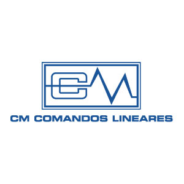
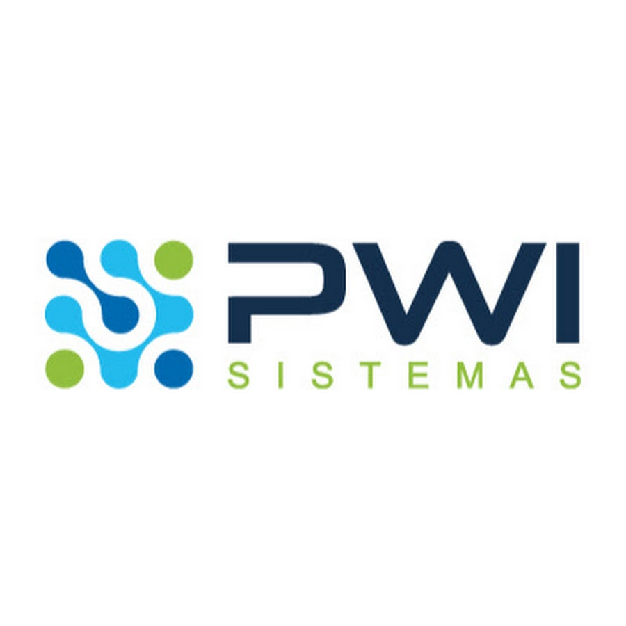

08:00
Credenciamento
A Escola Profissional Nossa Senhora de Fátima oferece ensino de qualidade, infraestrutura moderna e cursos alinhados às demandas do mercado de trabalho. Com salas equipadas, laboratórios, oficinas, biblioteca e auditório, proporcionamos uma formação completa, unindo teoria e prática.
Nossa missão é preparar jovens e adultos com conhecimento, autonomia e confiança para construir um futuro com mais oportunidades.
Conheça nossas salas moderna e espaços de aprendizado
Equipados com computadores modernos e softwares atualizados, ideais para práticas, pesquisas e desenvolvimento de projetos.
Ambientes confortáveis, bem iluminados e organizados, garantindo mais liberdade e interação nas atividades.
Conheça as histórias de sucesso de quem transformou sua vida profissional conosco

Sábado, das 08:00 às 14:00
Av. Cel. Octaviano de Freitas Costa, 463
Veleiros, São Paulo - SP
Programação completa das 08h às 17h — participe de quantas atividades quiser.
Credenciamento
Abertura oficial
Oficinas práticas
Visitação aos laboratórios
Palestras
Rodada com empresas
Encerramento
Conheça os cursos oferecidos pelo Instituto Social Nossa Senhora de Fátima, projetados para capacitar jovens e adultos para as demandas do mercado de trabalho.
Capacita para apoio administrativo em áreas como controle de estoques, gestão de RH, logística, marketing e operações contábeis. Exige ética e boa comunicação.
Desenvolvimento de projetos gráficos, criação de peças publicitárias, marketing digital, fotografia e edição de vídeo para campanhas criativas e gestão de redes sociais.
Formação nas áreas de Hardware (suporte, manutenção e redes) e Software (desenvolvimento de sistemas, programas e banco de dados com linguagens de programação).
Capacita para manutenções preventivas e corretivas em veículos automotores, abrangendo elétrica, eletrônica e mecânica automotiva com responsabilidade e iniciativa.
Instalação e manutenção de sistemas de iluminação, segurança e IOT (Domótica), além de programar robôs para aplicações comerciais e industriais.
Curso "English in Action", foca no desenvolvimento das quatro habilidades: fala, escrita, leitura e audição. Dividido em módulos Beginners, Elementary e Pre-Intermediate.
Focado no nível intermediário para conversação, escrita, leitura e audição, preparando o aluno para o curso avançado. Requer dedicação e proficiência básica.

